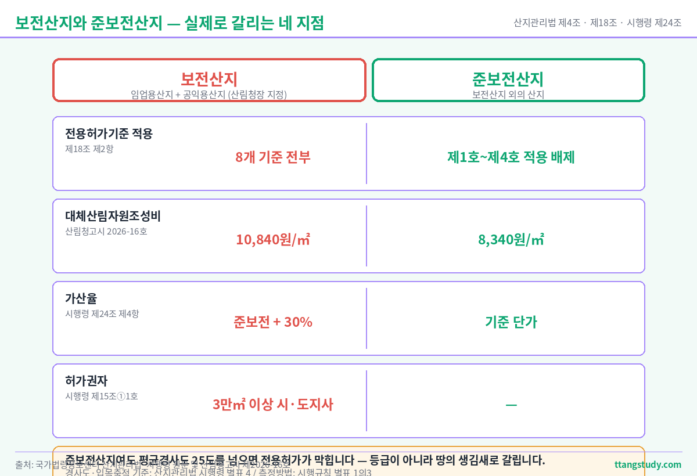

산지·농지 법령 가이드
보전/준보전산지의 갈림, 전용허가 기준 숫자 세 개, 그리고 농취증

산지전용허가 기준 숫자 — 경사도 25도, 입목축적 150%, 농취증 발급 기한
| 항목 | 기준 | 근거 조문 |
|---|---|---|
| 평균경사도 | 25도 이하 | 산지관리법 시행령 별표 4 |
| 입목축적 | 시·군·구 평균의 150% 이하 | 산지관리법 시행령 별표 4 |
| 표고 | 50% 미만 (예외 있음) | 산지관리법 시행규칙 별표 1의3 |
| 평균경사도 측정 방법 | 수치지형도에 10m × 10m 격자 | 산지관리법 시행규칙 별표 1의3 |
| 조례로 조정할 수 있는 범위 | 강화 또는 10% 범위 완화 (인구감소지역 20%) | 산지관리법 시행령 제20조 제7항 |
| 대체산림자원조성비 가산 | 보전산지 30% 가산, 전용제한지역 100% 가산 | 산지관리법 시행령 제24조 제4항 |
| 농지취득자격증명 발급 기한 | 7일 / 계획서 면제 시 4일 / 농지위원회 심의 시 14일 | 농지법 제8조 제4항 |
| 농지 처분 관련 이행강제금 | 감정가격과 개별공시지가 중 높은 가액의 100분의 25, 매년 1회 | 농지법 제63조 제1항 |
보전산지와 준보전산지 차이 — 실제로 갈리는 네 지점
| 구분 | 보전산지 | 준보전산지 | 근거 |
|---|---|---|---|
| 정의 | 임업용산지(가목) + 공익용산지(나목), 산림청장이 지정 | 보전산지 외의 산지 | 산지관리법 제4조 제1항 제1호·제2호 |
| 전용허가기준 적용 범위 | 8개 기준 전부 적용 | 제1호~제4호는 적용 배제 | 산지관리법 제18조 제2항 |
| 행위제한 | 허용행위를 열거(제12조 제1항·제2항). 개발제한구역·자연공원·상수원보호구역 등에 걸려 있으면 그 개별법의 행위제한이 적용 | 별도 행위제한 조항 없음 — 전용허가 기준으로 판단 | 산지관리법 제12조 제1항~제3항 |
| 대체산림자원조성비 단가 | 준보전산지 기준의 30% 가산 | 기준 단가 | 산지관리법 시행령 제24조 제4항 |
| 허가권자 | 3만㎡ 이상이면 시·도지사 이상 | — | 산지관리법 시행령 제15조 제1항 제1호 |
산지전용허가·농지취득자격증명 확인 순서
- 보전산지인지, 그중 임업용인지 공익용인지 확인합니다(산지관리법 제4조 제1항 제1호). 공익용산지 대상인 '녹지지역'은 보전녹지지역만 해당합니다(시행령 제4조 제2항).
- 공익용산지라면 어느 법으로 묶여 있는지 확인합니다. 개발제한구역·자연공원·상수원보호구역 등에 걸린 공익용산지는 산지관리법 제12조 제2항이 아니라 제12조 제3항에 따라 해당 개별법의 행위제한이 적용됩니다.
- 하려는 일이 '산지전용'에 해당하는지 봅니다. 조림·임산물채취·임산물재배·산지일시사용 '외'의 용도로 쓰는 것이 전용입니다(제2조 제2호). 허가 조문은 제14조, 기준 조문은 제18조로 서로 다릅니다.
- 경사도·입목축적·표고의 실측값을 확인합니다(시행령 별표 4 / 시행규칙 별표 1의3). 경사도는 10m 격자로 계산하는 값이라 현장에서 완만해 보여도 기준을 넘길 수 있습니다. 해당 시·군 조례가 기준을 조정했는지도 같이 봅니다(시행령 제20조 제7항).
- 대체산림자원조성비를 그 해 고시 단가로 직접 계산합니다. 면적 × 단위면적당 금액이고, 단가는 법령이 아니라 산림청장 고시로 정해집니다(제19조 제8항). 보전산지는 30% 가산됩니다.
- 농지라면 농취증 발급 가능 여부를 봅니다. 지목이 아니라 실제 경작 이용 현황으로 판단하고(농지법 제2조 제1호 가목), 농지위원회 심의 대상 7유형에 걸리면 기한이 14일로 늘어납니다(시행규칙 제7조 제3항).
준보전산지·농취증에서 가장 많이 틀리는 네 가지
"준보전산지면 개발이 수월하다"
등급이 아니라 땅의 생김새로 갈립니다. 준보전산지여도 평균경사도 25도를 넘기면 막히고, 면적이 커지면 입목축적 기준이 새로 따라붙습니다.
"산지전용허가 기준은 제14조에 있다"
허가는 제14조, 기준은 제18조이고 세부기준은 제18조 제5항에서 대통령령에 위임되어 시행령 별표 4·시행규칙 별표 1의3에 있습니다.
"주말·체험영농은 계획서를 안 써도 된다"
농업경영계획서가 면제될 뿐 주말·체험영농계획서는 써야 합니다. 발급 기한도 4일이 아니라 7일입니다(농지법 제8조 제4항).
"지목이 전·답이 아니면 농지가 아니다"
농지법 제2조 제1호 가목은 지목을 불문하고 실제로 경작에 이용되는 토지를 농지로 봅니다. 지목이 임야·잡종지여도 경작 중이면 농취증이 필요할 수 있습니다.
용어별 상세
보전산지
산림청장이 지정하는 산지 — 임업용과 공익용으로 갈리고, 허가 기준이 전혀 다릅니다
두 갈래인데, 둘 다 산림청장이 지정합니다
「산지관리법」 제4조① … 전국의 산지를 다음 각 호와 같이 구분한다.
1. 보전산지(保全山地)
가. 임업용산지: 산림자원의 조성과 임업경영기반의 구축 등 임업생산 기능의 증진을 위하여 필요한 산지로서 다음의 산지를 대상으로 산림청장이 지정하는 산지
나. 공익용산지: 임업생산과 함께 재해 방지, 수원 보호, 자연생태계 보전, 산지경관 보전, 국민보건휴양 증진 등의 공익 기능을 위하여 필요한 산지로서 다음의 산지를 대상으로 산림청장이 지정하는 산지
2. 준보전산지: 보전산지 외의 산지
임업용산지의 대상은 채종림·시험림, 보전국유림, 임업진흥권역, 그 밖에 대통령령으로 정하는 산지입니다. 공익용산지의 대상은 15가지로, 자연휴양림·사찰림·산지전용제한지역·야생생물보호구역·자연공원·문화유산보호구역·상수원보호구역·개발제한구역·대통령령으로 정하는 녹지지역·생태경관보전지역·습지보호지역·특정도서·백두대간보호지역·산림보호구역 등입니다.
여기서 "대통령령으로 정하는 녹지지역"은 시행령 제4조 제2항에 따라 보전녹지지역만 해당합니다. 생산녹지·자연녹지는 들어가지 않습니다.
지정 절차는 제5조입니다
여기저기서 "제4조의2"라고 적힌 글이 보이는데, 산지관리법에 제4조의2는 존재하지 않습니다. 지정 절차는 제5조(보전산지의 지정절차), 변경·해제는 제6조입니다.
제5조의 절차는 산지구분도 작성 → 산지소유자 의견 청취 → 관계 행정기관장 협의 → 중앙산지관리위원회 심의 → 지정 고시 및 관계서류 일반 공람 순입니다. 다른 법률에 따라 관계 행정기관장 간 협의를 거쳐 보전산지 지정 대상이 된 경우에는 중앙산지관리위원회 심의를 생략합니다.
해제 사유는 제6조 제3항에 네 가지가 있습니다 — 지정 요건에 해당하지 않게 된 경우, 제8조 협의를 거친 경우, 산지전용허가·신고로 복구의무가 면제되거나 복구준공검사가 끝난 경우, 그 밖에 부적합한 경우입니다. 해제 여부를 판단할 때 산지특성평가를 할 수 있습니다.
행위제한 — 제12조인데, 실제로는 개별법이 적용되는 경우가 많습니다
제12조 제1항은 임업용산지, 제2항은 공익용산지의 행위제한입니다. 구조는 금지가 아니라 허용행위 열거입니다 — "다음 각 호의 어느 하나에 해당하는 행위를 하기 위한 경우를 제외하고는 산지전용 또는 산지일시사용을 할 수 없다"는 형식입니다.
임업용산지는 임도·산림경영관리사, 산림공익시설, 농림어업인 주택, 농림어업용 생산·가공시설, 광물·석재 개발, 묘지·화장·봉안시설, 종교시설, 병원·사회복지시설, 교육·연구시설 등 16개 호가 열거돼 있습니다. 공익용산지는 8개 호로 훨씬 좁고, 농림어업인 주택이나 종교시설 증·개축도 대통령령으로 정하는 규모 미만으로만 허용됩니다.
그런데 실무에서 더 중요한 것은 제12조 제3항입니다. 공익용산지 가운데 야생생물보호구역·자연공원·문화유산보호구역·상수원보호구역·개발제한구역·보전녹지지역·생태경관보전지역·습지보호지역·특정도서·백두대간보호지역·산림보호구역에 해당하는 산지는 행위제한을 해당 법률에 따라 각각 적용합니다. 즉 개발제한구역 안 공익용산지는 산지관리법 제12조 제2항이 아니라 개발제한구역법의 행위제한을 봐야 합니다.
준보전산지와 갈리는 진짜 지점 — 제18조 제2항
"보전산지는 전용이 안 된다"는 말은 과장입니다. 전용허가 자체는 가능합니다. 실질적인 차이는 허가기준을 몇 개 받느냐에서 생깁니다.
「산지관리법」 제18조② 제1항에도 불구하고 준보전산지의 경우 또는 다음 각 호의 요건을 모두 충족하는 경우에는 제1항제1호부터 제4호까지의 기준을 적용하지 아니한다.
제18조 제1항은 여덟 가지 허가기준을 두는데, 준보전산지는 그중 제1호(행위제한 해당 여부)·제2호(인근 산림 경영·관리)·제3호(조림 성공지)·제4호(자연생태적 기능)가 통째로 적용 배제되고 제5호~제8호(재해, 수원함양·수질, 보호가치 산림, 사업계획·면적·복구)만 받습니다. 보전산지는 여덟 개 전부를 받습니다.
허가권자도 다릅니다. 시행령 제15조 제1항 제1호에 따르면 사유림 기준으로 준보전산지는 50만㎡ 미만이면 시장·군수·구청장이지만, 보전산지는 3만㎡ 미만일 때만 시장·군수·구청장이고 3만~100만㎡는 시·도지사, 100만㎡ 이상은 산림청장입니다. 같은 5만㎡라도 준보전산지면 시·군, 보전산지면 시·도로 올라갑니다.
근거 법령
| 조문 | 핵심 내용 |
|---|---|
| 산지관리법 제4조 제1항 제1호 | 보전산지 = 임업용산지(가목) + 공익용산지(나목), 산림청장이 지정 |
| 산지관리법 시행령 제4조 제2항 | 공익용산지 대상 '녹지지역'은 보전녹지지역만 해당 |
| 산지관리법 제5조 | 보전산지 지정절차 — 소유자 의견 청취, 관계기관 협의, 중앙산지관리위원회 심의, 고시 |
| 산지관리법 제6조 | 보전산지의 변경·해제 — 해제 사유 4가지, 산지특성평가 |
| 산지관리법 제12조 제1항·제2항 | 임업용·공익용산지의 행위제한 (허용행위 열거 방식) |
| 산지관리법 제12조 제3항 | 개발제한구역·자연공원·상수원보호구역 등은 해당 개별법의 행위제한을 적용 |
| 산지관리법 제18조 제2항 | 준보전산지는 허가기준 제1호~제4호 적용 배제, 보전산지는 8개 전부 적용 |
| 산지관리법 시행령 제15조 제1항 제1호 | 허가권자 — 보전산지는 3만㎡ 이상이면 시·도지사 이상 |
계약 전에 확인할 것
- 토지이용계획확인서의 '산지구분' 항목에서 보전산지인지, 임업용인지 공익용인지 확인합니다.
- 공익용산지라면 그 지정 사유가 무엇인지(개발제한구역인지, 상수원보호구역인지 등) 확인합니다. 사유에 따라 적용 법률이 바뀝니다.
- 전용을 전제로 산다면 면적에 따라 허가권자가 누구인지 확인합니다. 보전산지는 3만㎡만 넘어도 시·도로 올라갑니다.
- 대체산림자원조성비 감면 항목에 해당하더라도 보전산지는 감면비율이 0%인 항목이 많습니다 — 아래 대체산림자원조성비 항목을 함께 보십시오.
준보전산지
보전산지가 아닌 나머지 산지 — 법에는 딱 한 줄로만 정의돼 있습니다
법에는 이렇게만 적혀 있습니다
준보전산지를 찾아보면 설명이 길게 나오는 곳이 많은데, 정작 법률 조문은 한 줄입니다.
「산지관리법」 제4조(산지의 구분) ① … 전국의 산지를 다음 각 호와 같이 구분한다.
1. 보전산지(保全山地) 가. 임업용산지 나. 공익용산지
2. 준보전산지: 보전산지 외의 산지
즉 준보전산지는 무언가인 산지가 아니라, 무언가가 아닌 산지입니다. 먼저 산림청장이 보전산지를 지정하고, 거기에 들지 않은 산지가 자동으로 준보전산지가 됩니다. 그래서 "준보전산지로 지정받았다"는 말은 성립하지 않습니다.
보전산지는 두 갈래입니다
준보전산지를 이해하려면 반대편인 보전산지를 봐야 합니다. 같은 조 제1호가 둘로 나눕니다.
- 임업용산지 — 산림자원 조성과 임업경영 기반 구축 등 임업생산 기능을 위해 산림청장이 지정하는 산지. 채종림·시험림, 보전국유림, 임업진흥권역 등이 들어갑니다.
- 공익용산지 — 재해 방지, 수원 보호, 자연생태계·산지경관 보전, 국민보건휴양 등 공익 기능을 위해 지정하는 산지. 자연휴양림, 사찰림, 자연공원 구역, 상수원보호구역, 개발제한구역, 백두대간보호지역, 산림보호구역 등이 해당합니다.
이 두 가지에 걸리지 않으면 준보전산지입니다. 개발 목적으로 임야를 볼 때 준보전산지부터 찾게 되는 이유가 여기에 있습니다.
"개발이 수월하다"는 말의 실제 범위
준보전산지라고 해서 전용이 자유로운 것은 아닙니다. 보전산지에 붙는 용도 제한이 없을 뿐, 산지를 다른 용도로 바꾸려면 똑같이 산지전용허가를 받아야 하고 허가기준도 똑같이 적용됩니다.
실제로 허가 단계에서 가장 많이 막히는 것은 지목이 아니라 땅의 생김새입니다. 산지관리법 시행령 별표 4와 시행규칙 별표 1의3이 정한 기준 가운데 세 가지가 특히 자주 걸립니다.
| 기준 | 법령상 수치 |
|---|---|
| 평균경사도 | 25도 이하(스키장은 35도). 더해서 100㎡ 단위로 쪼개 쟀을 때 경사도 25도 이상인 구역의 면적이 전체의 40% 이하 |
| 입목축적 | 헥타르당 입목축적이 관할 시·군·구 평균의 150% 이하. 50년생 이상 활엽수림 비율 50% 이하 |
| 표고 | 해당 산지 표고의 50% 미만에 위치. 다만 표고 100m 미만이거나 해발 300m 미만(산림률이 전국 평균 이상인 시·군·구)이면 적용 제외 |
이 숫자들은 블로그가 지어낸 것이 아니라 대통령령과 부령 본문에 그대로 박혀 있는 값입니다. 다만 산지관리법 시행령 제20조 제7항에 따라 지자체가 조례로 이 기준을 강화하거나 10% 범위에서 완화할 수 있습니다(인구감소지역은 20% 범위). 그래서 실제로 적용되는 숫자는 해당 시·군·구 조례를 봐야 확정됩니다.
근거 법령
| 조문 | 핵심 내용 |
|---|---|
| 산지관리법 제4조 제1항 제2호 | 준보전산지 = 보전산지 외의 산지 |
| 산지관리법 제4조 제1항 제1호 | 보전산지 = 임업용산지(가목) + 공익용산지(나목) |
| 산지관리법 제18조 | 산지전용허가기준 — 세부기준은 대통령령에 위임 |
| 산지관리법 시행령 별표 4 | 평균경사도 25도 이하, 입목축적 시·군·구 평균 150% 이하 |
| 산지관리법 시행규칙 별표 1의3 | 표고 50% 미만 (예외 있음), 평균경사도 측정방법 10m×10m 격자 |
| 산지관리법 시행령 제20조 제7항 | 조례로 강화 또는 10%(인구감소지역 20%) 범위 완화 가능 |
계약 전에 확인할 것
- 토지이용계획확인서에서 '보전산지' 표기가 있는지 먼저 봅니다. 표기가 없으면 준보전산지입니다.
- 산지정보시스템 또는 지자체 산림부서에서 평균경사도와 입목축적을 확인합니다. 눈으로 본 경사와 측정값은 다릅니다.
- 해당 시·군·구 산지관리 조례를 찾아 경사도 기준이 25도에서 조정돼 있는지 확인합니다.
- 표고 기준 제외 사유(표고 100m 미만 등)에 해당하는지 확인합니다.
산지전용허가
산지를 임업 외의 용도로 쓰려면 받아야 하는 허가 — 기준은 제14조가 아니라 제18조
무엇을 '전용'이라고 하는가
산지전용의 정의는 산지관리법 제2조 제2호에 있습니다. 눈여겨볼 것은 열거된 네 가지 '외'로 쓰는 것이 전용이라는 구조입니다.
「산지관리법」 제2조 2. "산지전용"(山地轉用)이란 산지를 다음 각 목의 어느 하나에 해당하는 용도 외로 사용하거나 이를 위하여 산지의 형질을 변경하는 것을 말한다.
가. 조림(造林), 숲 가꾸기, 입목의 벌채·굴취
나. 토석 등 임산물의 채취
다. 대통령령으로 정하는 임산물의 재배[…높이 또는 깊이 50센티미터 이상의 성토 또는 절토 등의 형질변경을 수반하는 경우와 시설물의 설치를 수반하는 경우는 제외한다]
라. 산지일시사용
따라서 주택·창고·공장·주차장을 짓는 것은 물론, 임산물 재배라도 50cm 이상 땅을 깎거나 쌓으면 전용에 해당합니다. "밭으로만 쓸 건데요"가 통하지 않는 이유입니다.
허가 조문과 기준 조문은 다릅니다
산지전용허가의 근거는 제14조입니다.
「산지관리법」 제14조(산지전용허가) ① 산지전용을 하려는 자는 그 용도를 정하여 대통령령으로 정하는 산지의 종류 및 면적 등의 구분에 따라 산림청장등의 허가를 받아야 하며, 허가받은 사항을 변경하려는 경우에도 같다. …
그런데 제14조에는 허가기준이 없습니다. 무엇을 보고 허가 여부를 정하는지는 제18조(산지전용허가기준 등)에 있고, 제18조 제1항은 8개 호의 추상적 기준만 두고 제5항에서 세부기준을 대통령령에 넘깁니다. 그래서 실제로 허가가 나느냐 마느냐를 정하는 숫자는 시행령 별표 4와 시행규칙 별표 1의3에 들어 있습니다. 법률 조문만 읽고는 기준을 알 수 없는 구조입니다.
실제로 걸리는 세 가지 숫자
| 항목 | 기준 | 근거 |
|---|---|---|
| 평균경사도 | 25도 이하 (스키장 35도) + 100㎡ 단위 구역 중 25도 이상 구역이 전체 면적의 40% 이하 | 시행령 별표 4 제2호 다목 1) |
| 입목축적 | ha당 입목축적이 관할 시·군·구 평균의 150% 이하 50년생 이상 활엽수림 비율 50% 이하 | 시행령 별표 4 제2호 다목 3)·4) |
| 표고 | 해당 산지 표고의 50% 미만에 위치 (표고 100m 미만, 해발 300m 미만 등 예외) | 시행규칙 별표 1의3 제3호 |
경사도를 재는 방법까지 부령에 정해져 있습니다 — 축척 1/50,000 이상 1/1,000 이하 수치지형도에 10m×10m 격자를 씌우고 불규칙삼각망을 만들어 면적비율로 평균을 냅니다. 현장에서 체감한 경사와 다를 수밖에 없습니다.
그리고 전용면적에 따라 적용 범위가 달라집니다. 660㎡ 미만이면 경사도 기준만, 660㎡ 이상이면 입목축적과 활엽수림 비율까지 함께 봅니다.
허가가 나면 끝이 아닙니다
허가를 받으면 대체산림자원조성비와 복구비 예치금이 따라옵니다. 특히 복구비는 금액이 작지 않아 사업비 계산에서 빠뜨리면 자금 계획이 틀어집니다. 전용 면적과 시설 종류에 따라 금액이 달라지므로 허가 신청 전에 관할 산림부서에서 개략 금액을 받아 두는 것이 안전합니다.
근거 법령
| 조문 | 핵심 내용 |
|---|---|
| 산지관리법 제2조 제2호 | 산지전용의 정의 — 조림·임산물채취·임산물재배·산지일시사용 '외'의 용도 |
| 산지관리법 제14조 | 산지전용허가 (기준은 이 조문에 없음) |
| 산지관리법 제18조 | 산지전용허가기준 — 제5항에서 대통령령에 위임 |
| 산지관리법 시행령 제20조 제6항·별표 4 | 경사도·입목축적 세부기준 |
| 산지관리법 시행규칙 별표 1의3 | 표고 기준과 평균경사도 측정방법 |
계약 전에 확인할 것
- 전용하려는 면적이 660㎡ 이상인지 확인합니다. 기준 적용 범위가 달라집니다.
- 수치지형도 기준 평균경사도를 측정값으로 확인합니다. 육안 판단은 근거가 되지 않습니다.
- 관할 시·군·구 조례에서 경사도·입목축적·표고 기준이 조정돼 있는지 확인합니다.
- 대체산림자원조성비와 복구비 예치금의 개략 금액을 미리 산정해 사업비에 넣습니다.
대체산림자원조성비
산지전용 때 미리 내는 부담금 — 금액은 법령이 아니라 매년 산림청 고시로 정해집니다
근거는 제19조, 원칙은 선납입니다
「산지관리법」 제19조① 다음 각 호의 어느 하나에 해당하는 자는 산지전용과 산지일시사용에 따른 대체산림자원 조성에 드는 비용(이하 "대체산림자원조성비")을 미리 내야 한다.
1. 제14조에 따라 산지전용허가를 받으려는 자
2. 제15조의2제1항에 따라 산지일시사용허가를 받으려는 자(광해방지사업을 하려는 자는 제외)
3. 다른 법률에 따라 산지전용허가 또는 산지일시사용허가가 의제되거나 배제되는 행정처분을 받으려는 자
제3호가 중요합니다. 개발행위허가나 건축허가처럼 다른 법률의 처분으로 산지전용허가가 의제되는 경우에도 이 부담금은 그대로 붙습니다. "산지전용허가를 따로 받지 않으니 안 내도 된다"는 생각은 틀립니다.
시행령 제15조 제3항 단서에 따라 허가관청은 납부 또는 예치 사실을 확인한 뒤에야 산지전용허가증을 발급합니다. 그래서 실무상 "돈부터 내고 허가증 받는" 순서가 됩니다.
예외 — 조건부 후납과 4년 분할납부
제19조 제2항에 두 가지 예외가 있습니다.
- 조건부 후납(시행령 제21조 제1항) — 납부금액에 따라 기한을 붙여 허가할 수 있습니다. 1천만원 미만은 20~30일, 1천만~5천만원은 30~60일, 5천만원 이상은 60~90일입니다. 그 기한까지 내지 않으면 산지전용·일시사용을 할 수 없습니다.
- 분할납부(시행령 제21조 제2항) — 국가·지방자치단체이거나, 산업단지·도시개발·관광지·택지·중소기업 공장용지로서 총납부금액이 1억원 이상인 경우 이행보증금을 예치하고 4년 이내 분할납부할 수 있습니다. 다만 목적사업 착수 전에 총액의 50% 범위에서 농림축산식품부령으로 정하는 금액을 먼저 내야 합니다.
납부고지 기간은 고지서 발행일부터 20일 이상 90일 이내이고 1회 연장이 가능합니다(시행령 제24조 제2항). 체납하면 국세 체납처분의 예 또는 지방행정제재·부과금 징수법에 따라 징수합니다(제19조 제9항).
금액이 법령에 없습니다 — 매년 고시로 바뀝니다
「산지관리법」 제19조⑧ … 대체산림자원조성비는 산지의 면적에 부과시점의 단위면적당 금액을 곱한 금액으로 하되, 단위면적당 금액은 산림청장이 결정·고시한다. 이 경우 산림청장은 제4조에 따라 구분된 산지별 또는 지역별로 단위면적당 금액을 달리할 수 있다.
시행령 제24조 제4항은 단위면적당 금액을 ① 해당 연도 잣나무 조림비와 식재 후 10년까지의 숲가꾸기 비용, ② 산림의 공익적 가치평가액, ③ 해당 산지 개별공시지가를 고려하여 산림청장이 중앙산지관리위원회 심의를 거쳐 매년 결정·고시한다고 정합니다. 그리고 산지 구분에 따라 이렇게 차등합니다.
| 산지 구분 | 단위면적당 금액 |
|---|---|
| 준보전산지 | 기준 금액 |
| 보전산지(제한지역 외) | 기준 금액 + 100분의 30 가산 |
| 산지전용·일시사용제한지역 | 기준 금액 + 100분의 100 가산 |
흔히 "고시 금액에 공시지가의 1%를 더한다"고 하는데, 이 비율은 법령 어디에도 없습니다. 법률은 "개별공시지가를 일부 포함한다"(제19조 제10항), 시행령은 "개별공시지가를 고려하여"(제24조 제4항)까지만 정하고, 반영 비율과 상한은 매년 산림청 고시에서 정합니다. 금액을 알아야 한다면 그 해 고시를 직접 봐야 하고, 지난해 숫자를 그대로 쓰면 틀립니다.
감면 — 보전산지는 0%인 항목이 많습니다
법 제19조 제5항은 감면 사유를 세 유형으로만 정합니다 — ① 국가·지자체의 공용·공공용 목적, ② 대통령령으로 정하는 중요 산업시설, ③ 광물 채굴 등 대통령령으로 정하는 시설. 감면하려면 중앙산지관리위원회 심의를 거쳐야 하고(제6항), 감면기간은 시행령 제23조 제2항에 따라 5년입니다.
실제 대상과 비율은 시행령 별표 5에 있고, 여기서 보전산지와 준보전산지의 감면비율이 갈립니다. 예를 들면
- 국가·지자체의 도로·댐·철도·공용청사·국방군사시설 등 — 보전 100% / 준보전 100%
- 국가산업단지 — 보전 100% / 준보전 100%, 그러나 그 외 산업단지는 보전 0% / 준보전 100%
- 관광지(50만㎡ 이상)·관광단지 — 보전 0% / 준보전 100%
- 농림어업인 주택 및 부대시설 — 보전 100% / 준보전 100% (자기 소유 산지에 660㎡ 미만, 실제 거주 요건)
- 광물의 채굴 — 보전 100% / 준보전 100%
- 기업도시개발구역, 혁신도시개발구역 등 — 보전 0% / 준보전 50%
중복되면 가장 높은 감면비율을 적용합니다. "감면 대상이면 보전산지도 면제"라는 설명은 틀립니다.
근거 법령
| 조문 | 핵심 내용 |
|---|---|
| 산지관리법 제19조 제1항 | 산지전용·일시사용허가를 받으려는 자는 미리 납부 — 의제·배제 처분도 포함 |
| 산지관리법 제19조 제2항 / 시행령 제21조 | 조건부 후납(금액별 20~90일), 1억원 이상 등은 4년 이내 분할납부 |
| 산지관리법 제19조 제8항 | 면적 × 단위면적당 금액, 단위면적당 금액은 산림청장이 결정·고시 |
| 산지관리법 시행령 제24조 제4항 | 준보전산지 기준, 보전산지 30% 가산, 전용제한지역 100% 가산 |
| 산지관리법 제19조 제5항~제7항 | 감면 3유형, 중앙산지관리위원회 심의 필수, 대상·비율은 대통령령 |
| 산지관리법 시행령 별표 5 | 감면 대상과 비율 — 보전산지/준보전산지가 다름 |
| 산지관리법 제19조의2 | 대체산림자원조성비의 환급 |
계약 전에 확인할 것
- 그 해 산림청 고시로 단위면적당 금액을 확인합니다. 법령에는 금액이 없고 매년 바뀝니다.
- 대상 산지가 보전산지인지 준보전산지인지 확인합니다. 보전산지는 30% 가산되고, 감면비율도 다릅니다.
- 다른 법률의 허가로 산지전용허가가 의제되는 경우에도 부담금은 그대로 붙습니다 — 사업 총비용에 반드시 넣습니다.
- 감면 대상이라면 시행령 별표 5에서 보전/준보전 각각의 비율을 확인합니다. 보전산지 0%인 항목이 적지 않습니다.
- 총액이 1억원을 넘고 해당 사업 유형이면 분할납부가 가능한지 허가관청에 확인합니다.
농지취득자격증명
농지를 사려면 받아야 하는 서류 — 등기 첨부 근거는 농지법 제8조 제6항입니다
지목이 아니라 실제 이용 현황으로 판단합니다
「농지법」 제2조 제1호 가목 — 전·답, 과수원, 그 밖에 법적 지목(地目)을 불문하고 실제로 농작물 경작지 또는 대통령령으로 정하는 다년생식물 재배지로 이용되는 토지
"법적 지목을 불문하고"가 법문에 그대로 있습니다. 지목이 대지여도 실제로 농사를 짓고 있으면 농지이고, 지목이 전이어도 오래 묵어 농지로 쓰이지 않으면 농지가 아닐 수 있습니다. 서류가 아니라 현장이 기준이라는 뜻입니다.
그리고 농지법 제6조 제1항은 경자유전 원칙을 이렇게 못 박습니다 — "농지는 자기의 농업경영에 이용하거나 이용할 자가 아니면 소유하지 못한다." 제2항의 예외(국가·지자체, 시험지·연구지, 주말·체험영농, 상속, 이농, 담보농지, 농지전용허가·신고 등)에 해당하지 않으면 소유 자체가 제한됩니다.
발급 기한 — 7일 / 4일 / 14일
기한은 시행령이 아니라 법 제8조 제4항 본문에 직접 적혀 있습니다.
| 구분 | 발급 기한 |
|---|---|
| 원칙 (농업경영계획서 또는 주말·체험영농계획서 작성) | 7일 |
| 계획서를 작성하지 않아도 되는 경우 | 4일 |
| 농지위원회 심의 대상 | 14일 |
여기서 자주 틀리는 것이 있습니다. 주말·체험영농은 계획서 면제가 아닙니다. 농업경영계획서를 쓰지 않는 대신 주말·체험영농계획서를 써야 하고(제8조 제2항 본문), 따라서 발급 기한도 4일이 아니라 7일입니다. 계획서를 아예 쓰지 않아도 되는 경우는 제6조 제2항 제2호(시험지·연구지·실습지)·제7호(농지전용허가·신고)·제9호(개발사업지구 내 1,500㎡ 미만 등)·제9호의2(평균경사율 15% 이상 농지)·제10호 바목뿐입니다.
농취증이 아예 필요 없는 경우도 있습니다(제8조 제1항 단서) — 국가·지자체, 상속, 담보농지 취득, 농지전용협의, 농업법인의 합병, 공유 농지의 분할, 시효 완성, 환매권 행사 등입니다.
농지위원회 심의 대상 7유형
법 제8조 제3항에 따라 일정한 경우에는 농지위원회 심의를 거쳐야 하고, 그러면 기한이 14일로 늘어납니다. 대상은 시행규칙 제7조 제3항에 일곱 가지로 열거돼 있습니다.
- 부동산거래신고법 제10조 제1항의 토지거래허가구역 안 농지를 취득하려는 자
- 농지 소재지 관할 시·군·구 또는 연접 시·군·구에 거주하지 않으면서 그 관할 구역 농지를 2022년 8월 18일 이후 처음으로 취득하려는 자
- 1필지를 3인 이상이 공유로 취득하는 경우 그 공유자
- 농업법인
- 출입국관리법에 따라 등록한 외국인
- 재외동포법에 따라 국내거소신고를 한 외국국적동포
- 그 밖에 시·군·구 조례로 정하는 자
제2호와 제3호를 눈여겨보십시오. 외지인이 처음 사는 경우와 여럿이 쪼개 사는 경우가 정면으로 들어가 있습니다.
안 지으면 처분의무, 그다음은 이행강제금
농취증을 받았다고 끝이 아닙니다. 자기 농업경영에 쓰지 않으면 제10조에 따라 사유 발생일부터 1년 이내 처분의무가 생기고, 처분하지 않으면 제11조에 따라 6개월 이내 처분명령이 나옵니다. 거짓이나 부정한 방법으로 농취증을 발급받아 소유한 경우도 처분명령 대상입니다.
「농지법」 제63조① … 감정평가법인등이 감정평가한 감정가격 또는 「부동산 가격공시에 관한 법률」 제10조에 따른 개별공시지가(없으면 표준지공시지가 기준 산정액) 중 더 높은 가액의 100분의 25에 해당하는 이행강제금을 부과한다.
조문 번호를 주의하십시오. 이행강제금은 제62조가 아니라 제63조입니다. 현행 제62조는 양벌규정이고, 제63조 끝에 "[제62조에서 이동]"이 적혀 있습니다. 개정 전 번호를 그대로 쓰는 자료가 많습니다. 그리고 공시지가의 20%가 아니라 둘 중 높은 가액의 25%이며, 이행할 때까지 매년 1회 부과됩니다(제4항).
등기와 경매 — 근거가 어디에 있고, 어디에는 없는지
소유권이전등기에 농취증을 붙여야 하는 근거는 부동산등기규칙이 아니라 농지법에 있습니다.
「농지법」 제8조⑥ … 농지취득자격증명을 발급받아 농지를 취득하는 자가 그 소유권에 관한 등기를 신청할 때에는 농지취득자격증명을 첨부하여야 한다.
경매는 사정이 다릅니다. 민사집행법과 민사집행규칙 전문에 농지취득자격증명에 관한 조문은 없습니다. 관련되는 것은 간접 근거뿐입니다 — 제121조 제2호(최고가매수신고인이 매수할 능력이나 자격이 없는 때)가 매각허가 이의신청 사유이고, 제123조 제2항이 그 경우 자격의 흠이 제거되지 아니한 때에 한하여 직권으로 매각을 허가하지 않도록 하고 있습니다.
따라서 "매각결정기일까지 농취증을 내야 한다"는 기한을 정한 법령 조문은 없습니다. 위 구조에서 나오는 실무 운용입니다. 또 "농취증을 못 내면 입찰보증금을 몰수당한다"는 설명도 법령 근거가 없습니다. 보증을 돌려받지 못한다는 명문은 제138조 제4항 하나인데, 이는 매수인이 대금지급기한까지 대금을 내지 않아 재매각이 명해진 경우이고, 농취증 미제출은 대금 미납이 아니라 매각불허가 국면이라 이 조항의 적용 대상이 아닙니다. 실제 처리는 집행법원의 운용에 달려 있으므로, 입찰 전에 해당 법원에 확인하는 것이 확실합니다.
근거 법령
| 조문 | 핵심 내용 |
|---|---|
| 농지법 제2조 제1호 가목 | 농지 = 지목을 불문하고 실제로 경작에 이용되는 토지 |
| 농지법 제6조 제1항 | 경자유전 — 자기의 농업경영에 이용하거나 이용할 자가 아니면 소유 불가 |
| 농지법 제8조 제1항 | 농지 취득 시 시·구·읍·면장에게서 농취증 발급 (상속·담보농지 등은 예외) |
| 농지법 제8조 제4항 | 발급 기한 7일 / 계획서 면제 시 4일 / 농지위원회 심의 시 14일 |
| 농지법 시행규칙 제7조 제3항 | 농지위원회 심의 대상 7유형 (토지거래허가구역, 외지인 최초 취득, 3인 이상 공유 등) |
| 농지법 제8조 제6항 | 소유권 등기 신청 시 농취증 첨부 의무 — 등기 첨부의 직접 근거 |
| 농지법 제10조·제11조 | 처분의무 1년, 처분명령 6개월 |
| 농지법 제63조 제1항 | 이행강제금 = 감정가격과 개별공시지가 중 높은 가액의 100분의 25, 매년 1회 |
계약 전에 확인할 것
- 지목이 아니라 현장 이용 현황으로 농지인지 판단합니다. 지목이 대지라도 경작 중이면 농지일 수 있습니다.
- 토지거래허가구역인지, 내가 그 시·군·구나 연접 지역에 살지 않는지, 공유자가 3인 이상인지 확인합니다. 하나라도 걸리면 농지위원회 심의 대상이고 기한이 14일입니다.
- 주말·체험영농으로 살 계획이면 농업진흥지역 밖의 농지인지 확인하고, 주말·체험영농계획서를 준비합니다.
- 취득 후 실제로 경작할 수 있는지 냉정하게 따집니다. 안 지으면 1년 뒤 처분의무, 그다음 매년 이행강제금입니다.
- 경매로 받을 계획이면 해당 집행법원에 농취증 제출 시기와 미제출 시 처리를 직접 확인합니다. 법령에 기한 규정이 없어 법원 운용에 달려 있습니다.
※ 위 조문은 2026-10-13 / 2026-10-14 국가법령정보센터 원문과 대조한 내용입니다. 법령은 개정될 수 있고, 조례로 기준이 달라지는 항목은 해당 시·군·구 조례를 직접 확인하십시오.
이 주제로 막힌 물건이 있으십니까? 커뮤니티에 상황을 남겨주시면 확인 순서를 같이 짚어 드립니다.
발행 2026-11-14 · 최종 확인 2026-11-17